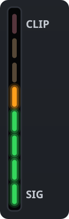

Bindings¶
A strip has parts: the fader, the encoder, the LCD, the backlight color, the meter, and the buttons Select, Rec and
Solo. Each part does what the type of its channel says. The fader of an output channel sets
the volume, for example. A binding replaces that for one part. A part without a binding keeps its default.
A binding is one of three things. (The defaults, such as "volume" or true, are no bindings.)
- A program of your own (
{ watch = "..." },{ set = "..." },{ run = "..." }). The daemon starts it and uses what it prints, or tells it what you did. - An entity of Home Assistant (
{ entity = "..." }). The part shows the entity, or sets it. The daemon talks to Home Assistant itself, see An entity of Home Assistant. - The word
"homeassistant". The part reads nothing from Home Assistant. The daemon creates a new entity for it in Home Assistant, and an automation of yours decides what it does. See Home Assistant.
A custom channel has no defaults: every part it uses is bound. The design behind this: Bindings and custom channels.
[channel.out]
type = "output"
meter = { watch = "/home/me/bin/cpu-load" } # a program of your own: the meter shows the CPU load, the fader stays the volume
color = "homeassistant" # the word: Home Assistant sets the color
lcd = { entity = "sensor.outside_temperature" } # an entity: the second line of the LCD shows its state
/home/me/bin/cpu-load is a script of your own. It prints the CPU load in percent, once a second. The meter shows a
level from 0 to 100, so percent fits:
Make the script executable with chmod +x.
The parts and what they take¶
The table is for the output, input and apps channels, and for the strips that the auto pool fills with applications. Each row is a
part. The columns say what the part does without a binding, and what a program or an entity can do for it.
| Part | Default | A program | An entity |
|---|---|---|---|
 fader |
The volume ("volume"). |
A value: { set, watch, min, max, step, format }, or poll and every instead of watch. |
{ entity, attribute, min, max, step, format, service, data }: shows the entity and sets it. |
 encoder |
The type's modes (Encoders). | A value: { set, watch, min, max, step, push, format }, or poll and every instead of watch. |
The same as the fader, plus push. |
 lcd |
What the type shows on the second line. | { watch } or { poll, every }: each line the program prints is the text. |
{ entity, attribute }: its state or attribute. |
 color |
A color name. | { watch } or { poll, every }: each line is a color name. |
{ entity, attribute }: its color. |
 meter |
The level of the audio (true), or dark (false). |
{ watch, min, max } or { poll, every, min, max }: each line is a level. |
{ entity, attribute, min, max }: its number. |
 select, rec, solo: press and hold |
The type's actions (Buttons and LEDs). | { run }: the program runs once to its end. |
{ service, entity, data }: calls a service of Home Assistant. |
select, rec, solo: led |
The type's indicators. | { watch } or { poll, every }: the line on, 1, true or yes lights the LED, flash flashes it. |
{ entity, attribute }: lit while the state is on, open, playing or home. |
Each part also takes the word "homeassistant" (a button takes it as press, the LED as led), see
Home Assistant. On output, input and apps
channels the Mute button has no binding: it always mutes the strip. A custom channel can bind it.
The defaults are written as you would write them: fader = "volume", meter = true (the audio) or
meter = false (dark).
The [controls] section takes the same bindings for a slot, whatever the slot
shows. A place (an entry of a slot like { show = "auto", color = "blue" }) takes plain words only, no binding:
bind the part in the channel, or in [controls] for a slot that shows pool strips (auto).
What the options do:
setis a program that runs with the new value in place of{value}.watchis a program that prints the value, one line per change.pollis a program that prints it at each run. A value explainsmin,max,step,pushandformat.-
{value}in therunof a button is, in this order:- the value of the fader of the strip, if you bound it to a program of your own;
- else the value of the encoder, if you bound that;
- else the volume in percent.
{target}is only for custom channels that havetargets, see Custom channels.
A fader bound to a program of your own has no value until that program prints its first line (or, without
watchandpoll, until you move the fader once). Until then arunthat uses{value}does not start, and the log says so. - When the fader is bound to something other than the volume, the encoder sets the volume instead of its own mode. In that case you can't bind the encoder of anoutput,inputorappschannel to something else. A custom channel has no such rule: it binds the fader and the encoder separately. - A bound meter shows its level whatever thebehavior.metersoption says (it can switch the meters off). - A program is a command: the program and its arguments, run without a shell. See Commands.
Commands¶
set, watch, poll and run each take a command: a program and its arguments. The daemon runs the program
itself, without a shell. A string is split at spaces, and quotes keep an argument together:
"notify-send 'Volume {value}'". A list gives each argument as it is: ["notify-send", "Volume {value}"].
Nothing else is expanded: no ~, no $HOME, no *, no |, > or &&. Give a program by its name (the daemon
looks for it in its own PATH, which can differ from the one of your shell when the daemon runs as a systemd
service) or by its full path. Pipes, redirects and loops belong in a script of your own: write
it, make it executable (chmod +x), and give its full path, e.g. watch = "/home/me/bin/cpu-load".
Watch or poll¶
A part that shows what a program prints takes one of two:
| Option | The program | The part shows | E.g. |
|---|---|---|---|
watch |
Runs all the time and prints a line per change. | Each new line. | watch = "playerctl status --follow" |
poll |
Runs to its end every every seconds (10 by default). |
The last line of each run that has text. | poll = "date +%H:%M", every = 10 |
Take watch for a program that tells each change by itself. Take poll for a program that prints the current value
once and ends. A part takes watch or poll, not both; every is for poll only.
The options of a binding¶
A value (fader, encoder) has set, watch, min, max, step, push and format: see
A value. step is how much one click of the encoder changes the value, so set it on the encoder. A fader takes it too, for Home
Assistant: its number moves in this step. The other bindings have fewer options:
| Binding | For | Option | Default | Meaning |
|---|---|---|---|---|
| A watch | lcd, color, a button's led, present of a custom channel |
watch |
A program that runs all the time and prints a line per change. The part shows the newest line. | |
poll |
Instead of watch: a program that runs to its end every every seconds. The part shows the last line it prints. |
|||
every |
10 |
Seconds from one run of poll to the next, above 0. |
||
| A level | meter |
watch |
A program that prints a number per change. | |
poll, every |
Instead of watch: a program that prints a number at each run, and the seconds between the runs. |
|||
min, max |
0, 100 |
The number with the meter dark, and with the meter full. | ||
| A program to run | a button's press, hold |
run |
The program and its arguments; {value} is the value (above). |
{value} is only for set and run: put it in one of the arguments after the program. A watch and a poll
program take no {value}. min must be below max, push between them, and step above 0. format must show a number, e.g. {value:.0%}.
Values and watches¶
- The fader, the ring and the LCD show a move at once.
setruns with the newest value only: moves that come while it runs wait, and only the last of them runs next. setandrunthat fail, or take longer than 10 seconds, are logged as warnings.- A
watchruns for as long as the configuration, also while no slot shows the channel. Awatchthat ends or can't start runs again after 5 seconds. - A
pollalso runs for as long as the configuration: first when the configuration is loaded, then everyeveryseconds. Only one run is on at a time. A run that takes longer thaneveryis stopped, and the next one starts at once. - A run of
pollthat fails (an exit status other than 0), can't start or is stopped gives no line: the part keeps the line before. The log has a warning. A run that ends well but prints no text at all gives an empty line. - While a value is set, or its fader is under a finger, the lines of
watchandpolldon't move it.
Example: the brightness of a screen¶
The encoder of the speakers sets the brightness of a screen with
system-control (sysctrl, a separate tool: adapt the commands to
yours). The fader stays the volume. A push sets the full brightness. watch prints the brightness, e.g. 0.60, at
each change.
[channel.out]
type = "output"
label = "Speaker"
encoder = { set = "sysctrl display redshift brightness -d DisplayPort-1 -b {value}", watch = "sysctrl display redshift brightness -d DisplayPort-1 --watch", min = 0.1, max = 1.0, push = 1.0, format = "{value:.0%}" }
solo = { press = { run = "sysctrl display redshift reset -d DisplayPort-1" } }
A strip of its own for the screen is a custom channel.
The second line of the LCD¶
The LCD has two lines of 7 characters. The second line shows, from the most important to the least: a notice (e.g. the name of a choice), the
volume while it is being set, the line of a bound lcd, then what the type shows. While Home Assistant is not there,
a part set to "homeassistant" shows offline.
An entity of Home Assistant¶
A part can show any entity of Home Assistant, and a fader or an encoder can set one, without an automation in
between: meter = { entity = "sensor.cpu_temp", min = 30, max = 90 }, color = { entity = "light.desk" },
fader = { entity = "light.desk" }. It needs the [homeassistant]
section: the address of Home Assistant and a long-lived access token. The daemon follows the entities through the
WebSocket API of Home Assistant; [mqtt] is not needed for them, only for the word "homeassistant".
| Option | For | Default | Meaning |
|---|---|---|---|
entity |
every part | required | The entity, by its ID, e.g. sensor.cpu_temp: <domain>.<name>. |
attribute |
every part | the state | An attribute of the entity instead of its state, e.g. media_title of a media_player. For a value, the one of its domain (below). |
min, max |
meter |
0, 100 |
The number with the meter dark, and with the meter full. |
min, max |
fader, encoder |
the entity's, else its domain's, else 0, 100 |
The value with the fader at the bottom and at the top. A number tells its own range. |
step, push, format |
fader, encoder |
as for a value | One step of the encoder, the value a push sets (the encoder only), how the LCD shows the value. |
service |
fader, encoder |
the one of its domain | The service a move calls, with the entity as its target, e.g. script.set_level. |
data |
fader, encoder |
the value of its domain | The data of service: {value} in it is the new value, e.g. { level = "{value}" }. |
What a part makes of the entity:
| Part | Shows |
|---|---|
lcd |
The state, a number shortened to fit (21.5, 1013), with its unit (21.5°C, 45%, 3.2 kW); or the attribute. |
color |
A light: its color (rgb_color, else hs_color), the nearest of the colors of the LCD (red, green, yellow, blue, magenta, cyan, white); off (dark) while it is off; white for a light without a color. Another entity: its state as a color name (an input_select with red, blue, ...). An attribute: a color name, or a list of red, green and blue. |
meter |
The number of the state (or the attribute), from min to max. |
A button's led |
Lit while the state is on, open, playing or home (and 1, true, yes, as for a watch); flashing on flash; else dark. |
present of a custom channel |
Present unless the entity is unavailable or unknown, or Home Assistant does not have it. |
A fader or an encoder follows the value of the entity and sets it with a service, the newest value only, as set
does. These domains need no service:
| Domain | Value | Range | Service |
|---|---|---|---|
light |
brightness (0 while off) |
0..255 | light.turn_on with brightness |
number, input_number |
the state | the entity's min..max |
number.set_value, input_number.set_value with value |
media_player |
volume_level |
0..1 | media_player.volume_set with volume_level |
cover |
current_position |
0..100 | cover.set_cover_position with position |
fan |
percentage (0 while off) |
0..100 | fan.set_percentage with percentage |
Any other entity, or another attribute, needs service and data with {value}. In data, a value that is only "{value}" becomes a number (0.6). {value} within a longer text becomes
part of that text ("level {value}" becomes level 0.6). A press or a hold of a button calls a service with { service, entity, data }. A button has no new value, so it
sends data as it is, and {value} in it is an error.
[channel.lamp]
type = "custom"
label = "Lamp"
fader = { entity = "light.desk" } # the brightness
encoder = { entity = "light.desk", attribute = "color_temp_kelvin", service = "light.turn_on", data = { color_temp_kelvin = "{value}" }, min = 2700, max = 6500, step = 100 }
color = { entity = "light.desk" }
select = { press = { service = "light.toggle", entity = "light.desk" }, led = { entity = "light.desk" } }
present = { entity = "light.desk" } # dark while the lamp is unavailable
[channel.out]
type = "output"
meter = { entity = "sensor.cpu_temperature", min = 30, max = 90 }
solo = { press = { service = "scene.turn_on", entity = "scene.movie" } }
- While the daemon is not connected to Home Assistant, the entities are not known: the LCD shows nothing, the meter rests, an LED is dark, a color stays as it was, and a fader or an encoder has no value. It connects again by itself.
- An entity that Home Assistant does not have is a warning in the log, once per connection, not an error of the file: it may come later.
- A service that fails (e.g. an entity that is unavailable) is a warning in the log. The fader or the encoder goes back to the value of the entity. After a call that works, it stays where you put it until the entity reports.
Home Assistant¶
A part set to "homeassistant" needs the [mqtt] section. The daemon
creates an entity for it in Home Assistant; an automation of yours decides what the entity does. <ns> is the
namespace of [mqtt] (xtouch by default) and <id> the id of the channel; see
Entities. "Starts with" is the state of the entity before Home Assistant
sets it:
| Part | Entity | Starts with |
|---|---|---|
fader = "homeassistant" |
number.<ns>_<id>_fader |
0 |
encoder = "homeassistant" |
number.<ns>_<id>_encoder |
0 |
lcd = "homeassistant" |
text.<ns>_<id>_bottom |
empty |
color = "homeassistant" |
select.<ns>_<id>_color |
white |
meter = "homeassistant" |
number.<ns>_<id>_meter, 0..100 |
0 |
led = "homeassistant" |
select.<ns>_<id>_<button>_led |
off |
With [mqtt], a fader or an encoder bound to a value is a number too (number.<ns>_<id>_fader,
number.<ns>_<id>_encoder): from the binding's min to its max, in steps of its step, else in fine steps of the
range. It has no state until the value is known; a change in Home Assistant runs set.
Only the channel itself has these entities, not the applications, outputs and inputs that a place of apps, auto or
devices shows. A place that sets a part to "homeassistant" does nothing: the daemon loads
the file, and the log says that the place can't do it. The entity belongs to the channel, so set the part in the
channel.
A fader or an encoder that you bound to an entity of Home Assistant ({ entity = "..." }) gets no number of its own,
because the entity is already in Home Assistant. Only a fader or an encoder bound to a program of your own gets one.
Simulate¶
Simulate previews the strips in the GUI, also on the command line as xtouch-daemon simulate. It runs
the watch and poll programs, but never set or run: a move changes only the simulation. It shows the entities
of Home Assistant while the daemon is connected, but calls no services. Parts set to "homeassistant" look as they do
while Home Assistant is not there.